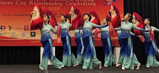

堪培拉红杉树舞蹈团成立于1997年，由一群热爱舞蹈、充满热情与活力的年轻女性组成。自成立以来，舞蹈团始终积极参与堪培拉各类社会与社区活动 以舞蹈为媒介，传播艺术之美，致力于为当地社区提供高质量、多元化的文艺演出，丰富社区文化生活。
The Canberra Redwoods Dance Group was founded in 1997 and is composed of passionate and dedicated young women who share a strong love for dance. Since its establishmen, the group has been actively involved in community and cultural events throughout Canberra. Embracing multiculturalism, the group uses dance as a universal language to celebrate cultural diversity, promote cross-cultural understanding, and enrich community life. Through high-quality performances, the group is committed to contributing to Canberra’s vibrant and inclusive cultural landscape.
